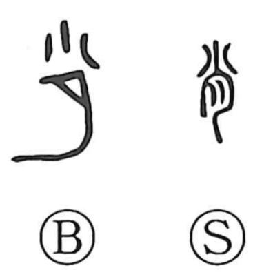

肖

Uncategorized
Kun: ayakaru | On: sho
resemble ・ likeness ・ model ・ imitate
Explanation
A phono-semantic graph: in the original form 肖, the element 小 acts as the phonetic, giving the On reading sho. The graph pictures a small piece of flesh pierced by a bone, so, like 屑 “scraps” and 梢 “treetop tip,” it names something small. Early sources already link it with likeness in a lineage: the Shuowen speaks of bones and flesh resembling one another, and bronze inscriptions record the phrase 小嗣, “to succeed to the ancestors’ craft,” evoking following in close resemblance. From this image of a small, cut piece and the sense of following after, 肖 comes to mean to resemble and, by extension, a model or likeness.